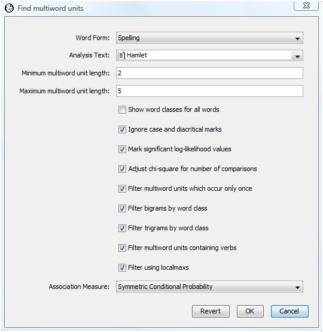

|
|
|
WordHoard defines a multiword unit as a special type of collocate in which the component words comprise a meaningful phrase. For example, "Knight of the Round Table" is a meaningful multiword unit or phrase. WordHoard uses the notion of a pseudo-bigram to generalize the computation of bigram (two word) statistical measures to phrases (n-grams) longer than two words, and to allow comparisons of these measures for phrases with different word counts. WordHoard applies the localmaxs algorithm of Silva et al. to the pseudo-bigrams to identify potential compositional phrases that "stand out" in a text. WordHoard can also filter two and three word phrases using the word class filters suggested by Justeson and Katz.
We can look at any multiword phrase as a "pseudo-bigram" having a left part and a right part. The Fair Dispersion Point Normalization offered by Silva et al. transforms any phrase of any size into a "pseudo-bigram" which reflects the "glue" among the individual words in the original phrase. Loosely speaking, the Fair Dispersion Point Normalization splits the phrase at each possible position, computes a bigram association measure for each split, and uses the arithmetic average (mean) of the individual association measure values as the association measure value for the entire phrase.
For example, the phrase "Knight of the Round Table" can be split into a bigram in four different ways:
Left part Right part Knight of the Round Table Knight of the Round Table Knight of the Round Table Knight of the Round Table
If we treat each "half" of the split phrase as a single word, we can compute a bigram association measure value for that split. Taking the arithetic mean of the four association measure values gives the Fair Dispersion Point Normalization Value.
The paper by Silva et al. derives the Fair Dispersion Point Normalization formulae for the association measures implemented by WordHoard. These are generalizations of the five bigram association measures WordHoard provides for finding two-word collocates.
The localmaxs algorithm accepts a text as input and generates multiword units from that text. For each phrase, the algorithm looks at all subphrases which are one word shorter contained within that phrase as well as all superphrases which are one word longer that contain the phrase. When the phrase's association measure achieves its maximum value compared to those for all the subphrases or superphrases, the phrase is considered a probable multiword unit (compositional phrase).
|
More precisely, the localmaxs algorithm is as follows.
Then for all x phrases in subW, and for all y phrases in superW, W is a multiword unit if:
|
Justeson and Katz suggested a part of speech based filter for bigrams (two word phrases) and trigrams (three word phrases) which eliminates those which are not likely to be compositional phrases. These patterns are useful in identifying frozen forms and potential named entities.
Adjective, NounNoun, Noun
Adjective, Adjective, NounAdjective, Noun, NounNoun, Adjective, NounNoun, Noun, NounNoun, Preposition, NounNoun, Conjunction, Noun*
*WordHoard adds the "Noun, Conjunction, Noun" pattern for trigrams to those proposed by Justeson and Katz.
To perform a Find Multiword Units analysis, select "Find Multiword Units" from the analysis menu. WordHoard displays the following dialog.
The dialog fields are as follows.
Word Form specifies the type of word form to find. You may specify lemma or spelling. We select spelling because we want to look for phrases expressed in their original spelling. Choosing lemma is a good idea if you want to ignore spelling differences that might otherwise mask the recognition of a phrase because its words appear in several different forms.
Analysis Text provides the text in which to search for multiword units. We select Shakespeare's play "Hamlet" as the analysis text.
Minimum multiword unit length specifies the minimum length phrase to extract. A value of 2 is the default and is a good choice for English text.
Maximum multiword unit length specifies the maximum length phrase to extract. A value of 5 is the default and is a reasonable choice to start with for English text.
Show word classes for all words asks WordHoard to display the word class for spellings and lemmata in the output. If you do not enable this option, WordHoard displays only the spelling or lemma text. We do not enable this option.
Ignore case and diacritical marks causes WordHoard to ignore upper/lower case as well as diacritical marks when comparing words. Ignoring diacritical marks is mostly important for non-English texts.
Mark significant log-likelihood values appends asterisks to each significant log-likelihood value. When the significance values are not being adjusted (see the next option below), the asterisks indicate the following levels of significance.
| **** | Significant at 0.0001 level |
| *** | Significant at 0.001 level |
| ** | Significant at 0.01 level |
| * | Significant at 0.05 level |
We enable this option.
Adjust chi-square for number of comparisons adjusts the breakpoints for assessing the significance of the log-likelihood statistics as described in the section Adjusting significance levels for many comparisons. We do not enable this option.
Filter multiword units which occur only once removes phrases which only occur once in the analysis text. We select this option. This saves a great deal of computing time and memory space.
Filter bigrams by word class applies the Justeson and Katz bigram filter to the extracted multiword units. We do not select this option.
Filter trigrams by word class applies the Justeson and Katz trigram filter to the extracted multiword units. We do not select this option.
Filter multiword units containing verbs removes multiword units containing verbs from the output. We do not select this option. This is a useful option to select when looking for potential named entities.
Filter using localmaxs enables multiword selection using the localmaxs algorithm. We select this option. This requires significant computing time and memory resources but is quite effective in isolating compositional phrases. If you do not select this option, all of the phrases from the specified minimum length through the maximum length will be deemed multiword units. Some of those may be removed if you select the bigram, trigram or verb filters above.
Association measure specifies the one to use when applying the localmaxs algorithm. We select symmetric conditional probability since Silva et al. found this to be the best at identifying genuine compositional phrases in their studies.
WordHoard presents the output of the find multiword units analysis in a table with eight columns. The first column contains the text of each potential multiword unit.
The second column displays the length (number of words) in the multiword unit.
The third column displays the number of times the multiword unit occurs in the analysis text.
The next five columns present measures of association for the multiword unit. For phrases containing two words (bigrams), these are exactly the same as the association measures for a simple Find Collocates analysis. For phrases containing more than two words, these are the measures generated from transforming the phrase to a pseudo-bigram and applying the Fair Dispersion Point Normalization.
The header of the output table indicates the total number of multiword units extracted as well as how many of these passed through any filters selected in the analysis dialog, including the localmaxs algorithm. In this case 103,984 candidate phrases were extracted from Hamlet. Of these only 156 were selected as multiword units by the localmaxs algorithm using Symmetric Conditional Probability as the association measure.
The top scoring phrase using symmetric conditional probability is "barbary horses." As it happens, the word "barbary" appears only twice in Hamlet -- both times as the left neighbor of "horses." You can use the "Find Words" facility in WordHoard to see the contexts.
Many of the multiword units are clearly genuine compositional phrases. Some are reasonably unique to Hamlet, e.g., "Rosencrantz and Guildenstern" and "welcome to Elsinore." Some you might expect to find in other works, e.g., "pit of clay" and "white as snow." Some of the multiword units, particularly the lower-scoring ones, do not appear to be compositional phrases. If we scroll down to the bottom of the output table we see phrases such as "substance of" and "the sea and." But on the whole, the localmaxs algorithm has selected many more compositional phrases than non-compositional phrases.
As an alternative to looking at this dense table of numbers, WordHoard allows you to display the extracted multiword unit results in a tag cloud. A tag cloud displays words or phrases in different font sizes. To create a tag cloud from the multiword unit results, select the measure of association for the tag cloud using the "Cloud Association Measure" drop down list. We will use the symmetric conditional probability values. Then select the "Cloud" button to generate the cloud.
The larger the text for a phrase, the higher its association measure value. This allows you assess at a glance the relative importance of the phrase. WordHoard assigns a font size of 100 points to the phrase with the largest (scaled) association measure value. Phrases whose font size ends up smaller than 3 points are not displayed in the tag cloud. Selecting a different association measure will usually produce a different tag cloud.
The words comprising a phrase are separated by a small raised square in the tag cloud output. Entire phrases are separated by spaces.
As with other tag clouds in WordHoard, you may click on a phrase to remove it from the display and resize the remaining phrases.
Let's instruct WordHoard to filter the extracted multiword units using the Justeson and Katz part of speech based filter. To do this we select the following additional options in the Find Multiword Units dialog:
We also select the option to filter multiword units containing verbs.

The resulting table of multiword phrases is much shorter. Only 39 phrases passed all the filters. Most are clearly compositional phrases with a few exceptions such as "except my life except."
Pseudo-bigrams and the localmaxs algorithm are discussed in:
Justeson and Katz present their part of speech based filter in:
|
|
|